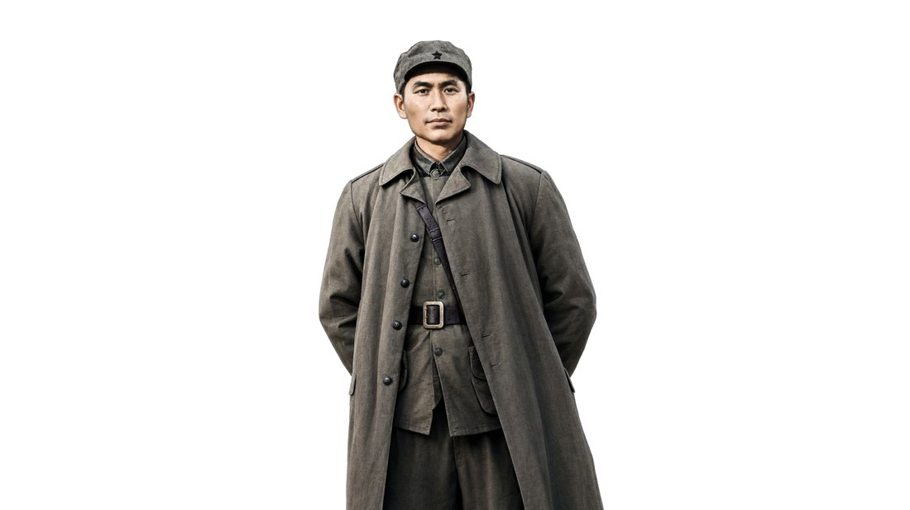

志1924 黄埔
把青春，交给黄埔
1924 年，他考入黄埔军校第一期；同年冬天，他加入中国共产党。
1901 年，冯达飞出生在广东连州东陂镇。1924 年，他考入黄埔军校第一期，成为那个年代最有理想的年轻人之一。也正是在这一年冬天，他作出了一生的选择——加入中国共产党。从此，他不再只是东陂镇走出去的聪慧少年，而是一个把“为中华”三个字，刻进骨头里的军人。
1901 年，冯达飞从连州东陂镇出发，飞去为祖国开天辟地；1942 年，他为这个国家献出生命。今天，连州市实验小学的孩子，在同一片乡土上，把“飞”与信仰，一代代续下去。
一百多年前，从连州东陂镇，飞出去一个连州人。
他叫冯达飞——他的一生，就是红色南粤最早的一条航线。
红色南粤，不只在地图上，更在这位连州人真实走过的每一步里。1901 年，他生于东陂镇；1942 年，他为这个国家献出生命。今天，连州市实验小学以“航天筑梦，党建筑魂”，把这条航线，继续写进一代代孩子的心里。
本页为「红色南粤 · 冯达飞 × 连州市实验小学」专题 · 只讲一条关于“飞”与信仰的航线从 1901 年东陂出发，到 1942 年他把生命留在上饶——冯达飞的一生，是六段航程；今天的学校与孩子，沿着这条航线继续飞。
1924 年，他考入黄埔军校第一期；同年冬天，他加入中国共产党。
1901 年，冯达飞出生在广东连州东陂镇。1924 年，他考入黄埔军校第一期，成为那个年代最有理想的年轻人之一。也正是在这一年冬天，他作出了一生的选择——加入中国共产党。从此，他不再只是东陂镇走出去的聪慧少年，而是一个把“为中华”三个字，刻进骨头里的军人。
1925 年，他随黄埔参加东征（讨伐陈炯明）；随后，他去了苏联，学航空。
1925 年，冯达飞随黄埔军校参加东征，讨伐陈炯明，在战火里第一次真正认识“要为谁而战”。也就是这一年，他离开故土，远赴苏联学习航空。那时的中国，还没有自己的空军；他是最早把那片天空，认作“人民军队翅膀”的人之一。
1927 年，他从苏联归国；随后，他参加了广州起义。
1927 年，带着学成的飞行技术，冯达飞从苏联归国。那是一个分岔的路口——他没有往安逸走，而是参加了中国共产党领导的广州起义，在红色南粤的大地上，再一次把枪口对准了旧世界。从这一刻起，他学来的那身本事，不再属于他自己，而是属于这个正在觉醒的国家。
1929 年，他参加百色起义，成为红七军的一员。
1929 年，冯达飞参加百色起义，成为红七军的一员。南粤与广西的群山之间，革命的火焰越烧越旺。他走了很远的路——从连州的乡土，到黄埔的操场，到苏联的天空，再到右江两岸的群山，一路把他的信仰，种进了更多人的心里。

AI 数字人 · 基于史实艺术化演绎我们把这位连州籍、被誉为“人民军队航空先驱、最早的飞行员之一、空军首位飞行教官”的冯达飞，做成一位会说话的“数字人”。请他从天上回到东陂，给今天的孩子，亲口讲一段当年没有导航的航程。
1932 年，他随红军攻占漳州，驾驶缴获的飞机，首飞中央苏区。
1932 年，冯达飞随红军攻占福建漳州，缴获了一架飞机。没有导航，没有雷达，没有地面指挥；只有一张地图，和一个方向。他驾驶这架缴获的飞机，飞回中央苏区——那是人民军队历史上，首次由己方飞行员驾机飞回红色根据地。他把人民军队的航空史，从“一张地图、一个方向”开始，写进了天空。
※ “没有导航、没有雷达、只有一张地图和一个方向”为讲述性/画面意境，属基于公开史实的艺术化演绎，非正式史实口径。
1942 年 6 月，他在江西上饶集中营（茅家岭）壮烈牺牲。
1942 年 6 月，冯达飞在江西上饶集中营（茅家岭）壮烈牺牲。他没有死在驾驶舱里，而是把生命，留在了黑暗的牢狱中。他是人民军队航空先驱、最早的飞行员之一、空军首位飞行教官。今天，他的名字镌刻在中国人民空军英烈墙上——他飞进的那片天空，永远记得他。
冯达飞不是一个"要背的名字"。年轻时他见过怎样的世界？牺牲前他在想什么？点一个瞬间，听他亲口说一句。
点一个节点→听他回应（数字人讲述 · 视频 + 字幕回显）。所有的"他说"，都是基于公开史实的艺术化演绎。
▲ 本段为基于公开史实的艺术化演绎，非真实历史影像、照片与录音；人物语言以可核验史料为准，不虚构原话。
一所把“飞”种进孩子心里的学校，接住了这位连州人的“飞行与信仰”。
航段到这里，转向今天。连州市实验小学，是一所把“航天”写进育人、把“党建”融进习惯的学校：这里是全国青少年航天科普活动基地校、广东省航空航天特色学校、清远市科学教育示范学校；校园里有飞享未来航空馆、科技长廊、航空航天科技馆，还有以科学家命名的班级文化。
从一年级的手抛飞机，到气球火箭，再到扑翼飞机，孩子的每一次起跑，都是同一句“飞出去”。每年四月的科技节上，液氮科学秀、机器狗、无人机、水火箭、纸飞机、激光切割轮番上场——这里的孩子，从很小就知道，天空是可以用手够到的地方。
红色教育也没有缺席。课本剧《赵一曼的故事》里，那场“跨时空对话”，打动了一届又一届孩子。今年，正是长征胜利 90 周年——而冯达飞，是广东党史有据可查、参加完全程二万五千里长征的粤籍红军之一。这所学校要做的，正是让那段“飞行与信仰”，穿过九十年，落在今天的红领巾上。
广东建设职业技术学院启智润心实践队的三下乡学子，和这里的老师、孩子一起，把这条航线讲下去——在“十五五”的新征程上，青年建功，少年筑梦。
把“红色”落到每一座城、每一年——从东陂镇起飞，到黄埔，到苏联，到漳州上空，再到他为中华献出生命。
生于广东连州东陂镇。这条航线，从乡土起飞。
考入黄埔军校第一期；同年冬，加入中国共产党。
参加黄埔东征（讨伐陈炯明）；随后赴苏联学习航空。
学成归国；参加广州起义。
参加百色起义，成为红七军一员。
随红军攻占福建漳州，驾缴获飞机首飞中央苏区——人民军队首次由己方飞行员驾机飞回红色根据地。
在江西上饶集中营（茅家岭）壮烈牺牲；名字镌刻在中国人民空军英烈墙上。
广东建院学子寻访故里、读他的信、讲他的故事，把红色南粤写进青春。
点一站，看"那年那地那事"——点亮的，是他用脚走出来的红色南粤。连州 → 黄埔 → 苏联 → 广州 → 百色 → 漳州 → 上饶。
他在这里出生。红色南粤的航线，从东陂的乡土起飞。
很多年前，冯达飞飞过这片天空；今天，他在天上看着我们。史书写不进去的话，留在这里。写下一句对他、对南粤先烈的缅怀或致敬，折成一架纸飞机，让它替他，继续被看见。
一句话，就能让他飞过的那片天，再被看见一次。
广东建设职业技术学院未来智能学院启智润心实践队，来到清远连州。我们不是来做一堂课，而是带着这里的老师和孩子，沿着一位连州先烈的航线，走了一遍他的一生——从东陂起飞，到漳州那片天空，再到他为中华献出生命的地方。记住他，就是把红色南粤，写进这一代人的青春。
▲ 本段为基于公开史实的艺术化演绎，非真实历史影像、照片与录音；人物语言以可核验史料为准，不虚构原话。
这封信，写给今天的孩子，也写给当年的冯达飞。
冯达飞（1901—1942），广东连州东陂镇人，中共党员，人民军队航空先驱、最早的飞行员之一、空军首位飞行教官。1924 年考入黄埔军校第一期，同年冬加入中国共产党；1925 年参加黄埔东征（讨伐陈炯明），随后赴苏联学习航空；1927 年归国，参加广州起义；1929 年参加百色起义；1932 年，他随红军攻占福建漳州，驾驶缴获的飞机首次飞回中央苏区——那是人民军队历史上首次由己方飞行员驾机飞回红色根据地。1942 年 6 月，他在江西上饶集中营（茅家岭）壮烈牺牲，名字镌刻在中国人民空军英烈墙上。他把“为中华”三个字，写进了人民军队航空事业的每一次起飞。
今天，我们站在他出生的地方，把这段历史讲给下一代听——讲故事的人换了一批，故事里的赤诚没有变。
—— 启智润心实践队
据公开史料整理（广东老区网、央视“矢志革命的红军飞行教官/红色雄鹰”、广东红色故事汇、连州市委党史办）；本页为基于公开史实的艺术化演绎，非真实历史影像与录音，不虚构原话。